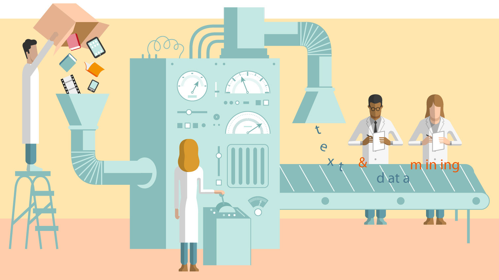

La selección de características es una parte importante del aprendizaje automático. La selección de características hace referencia al proceso de reducir las entradas para su procesamiento y análisis, o de encontrar las entradas más significativas. Un término relacionado, ingeniería de características (o extracción de características), hace referencia al proceso de extraer información útil o características de datos existentes.
La selección de características es crítica para crear un modelo adecuado por varios motivos. El primero motivo es que la selección de características implica cierto grado de reducción de cardinalidad para imponer un corte en el número de atributos que se tendrán en cuenta al crear un modelo. Los datos casi siempre contienen más información de la necesaria para crear el modelo, o bien el tipo incorrecto de información. Por ejemplo, puede que tenga un conjunto de datos de 500 columnas donde se describan las características de los clientes. Pero, si algunas de las columnas tienen pocos datos, obtendrá pocas ventajas si las agrega al modelo y, si algunas de las columnas están duplicadas, usar las dos columnas podría afectar al modelo de dashboard de data mining.
La selección de características no solo mejora la calidad del modelo, sino que también hace que el proceso de modelado sea más eficiente. Si usa columnas innecesarias al generar el modelo, se necesitará más CPU y memoria durante el proceso de entrenamiento, así como más espacio de almacenamiento para el modelo completado. Incluso si los recursos no son un problema, se recomienda realizar la selección de características para identificar las mejores columnas, ya que las columnas innecesarias pueden reducir la calidad del modelo de varias formas:
Durante el proceso de selección de características, el analista, la herramienta de modelado o el algoritmo seleccionan o descartan de forma activa atributos según su utilidad para el análisis. El analista puede usar la ingeniería de características para agregar características y quitar o modificar datos existentes, mientras que el algoritmo de aprendizaje automático suele asignar puntuaciones a las columnas y valida su utilidad en el modelo.